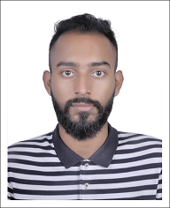

CV Of Ahmed Shahriar Masud

Ahmed Shahriar Masud
Quick Learner | Punctual | Tech Enthusiast
Road # 11, Nikunja - 2, Khilkhet, Dhaka
shahriarmasud85@gmail.com; +8801718097544
Linkedin ID: https://www.linkedin.com/in/ahmed-shahriar
Started BRAC University in Summer 2013 and Completed in spring 2018. Interested in research and development works, have excellent writing and communication skills in English, fair computer literacy and basic programming knowledge data entry.
Education
| 2013-2018 - |
BRAC University |
BSc In EEE |
| 2010-2012 - |
Jalalabad Cantonment Public College . |
Science |
| 2009-2010 - |
The Flower's K.G. & High School . |
Science |
Sillks
| Computer Skills |
- Data Processing and Visualization in MS Excel, MS Word, MS PowerPoint.
- Using Statistical Methods to get insights from large data sets using Matlab.
- Basic programming using JAVA
- Google Adsense & analytics
|
| Management and Leadership |
- Lead a 8 member of team in Taskeater Bangladesh
- Work as a creative & IT director at Club With BRAC. There we work with poor homeless children for their betterment.
We also organize an ifter party with street children.
|
| Other |
- Regular performer of Semester and BRAC University clubs football team.
- Worked as a Boy Scout team, in school and college participate national and international scout camp.
|
Job Experiences & Research Experiences
| 10/2018-Till Date: |
Taskeater Bangladesh Limited
Senior Analyst |
| 05/2017 - 4/2018: |
Control and Applications Research Center, BRAC University.
Undergraduate Degree Project Student on Lumen Measuring Embedded System. |
| 05/2017 - 08/2017: |
BRAC University, Digital System Designing Project
Designed and submitted project paper on automatic railway gate system and high speed alert system. |
References
Dr. A.K.M Abdul Malek Azad
Professor
Department of EEE, BRAC University, Dhaka.
a.azad@bracu.ac.bd; +8804478444126
Dr. Md. Hasanuzzaman Sagor
Assistant Professor(On leave)
Department of EEE, BRAC University, Dhaka.
hasan.sagor@bracu.ac.bd; +8804478444126